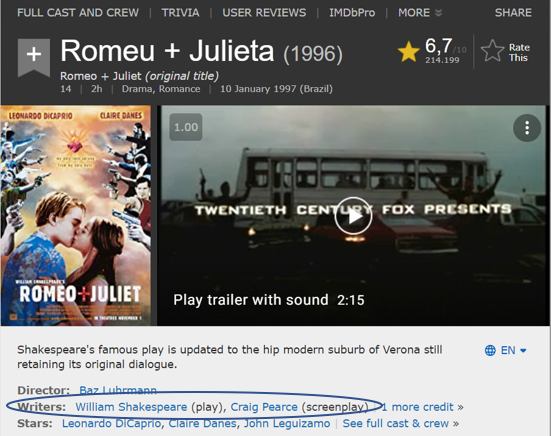
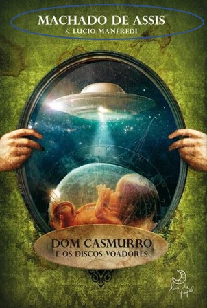

Quem é autor de uma obra?
Capítulo 3
I.
Parece uma pergunta fácil, não é mesmo? O autor é quem cria a obra. Acho que você e eu podemos chegar a um acordo sobre isso. Ainda assim, as coisas podem ficar bem complicadas.
Por exemplo: nos últimos anos, vimos notícias falando de animais que produziram obras de arte. Na verdade, o assunto nem é tão inédito assim, pois há alguns anos até uma novela tratava do assunto.
Mas o que acontece quando um macaco de verdade faz uma foto tão famosa que vai parar até em capa de revista?
A história é bem famosa. O fotógrafo inglês David Slater estava na Indonésia fazendo fotos de macacos nativos. E aí existe uma controvérsia sobre o que aconteceu. Uma versão da história diz que o fotógrafo programou a câmera para ela ser usada pelos macacos, que até então estavam tímidos. Outra versão afirma que o macaco fotogênico “furtou” a câmera e fez as fotos sozinho. E qual a importância dessas duas versões? É que elas ensinam exatamente onde está a distinção entre a possibilidade de ser autor e de não ser, ao menos pela lei brasileira.
Aliás, vamos logo a ela.
A lei de direito autoral no Brasil, lei 9610/98, em seu art. 11, afirma que “autor é a pessoa física criadora de obra literária, artística ou científica”. Portanto, 2 são os requisitos para que alguém seja considerado autor: que seja uma pessoa física e que tenha criado a obra literária, artística ou científica.
Na segunda versão da história, aquela em que o macaco (que aliás se chama Naruto) furta a câmera, temos um problema logo no início. O macaco não é pessoa física, de modo que ele não pode, em hipótese alguma, ser considerado autor. Sabemos que no mundo dos fatos ele é autor, mas não no mundo do direito.
E nesse caso ainda, como fica o fotógrafo? Ele é pessoa física, mas não criou nenhuma obra. Mas e a câmera? Não era dele? Não foi por meio da câmera que a foto foi tirada? Sim, mas isso, para a LDA, é um detalhe irrelevante. Nessa segunda hipótese, vejam só que interessante: NÃO EXISTE AUTOR DA FOTO PELA LEI. E qual a consequência disso? A foto estaria em domínio público, por falta de autoria.
Contudo, se levarmos em conta a primeira versão da história, a resposta poderia ser bastante diferente. Se David Slater programou a câmera, ele pode dizer que criou a obra, que existe então criação artística. Ele é o autor da obra, pois a obra dele seria, por exemplo, trabalhar com o macaco como um instrumento de criação.
De fato, houve até uma ação judicial nos EUA sobre a selfie. Mas a ação não nos ajuda muito, pois ela não dizia respeito à titularidade do fotógrafo, mas sim à possibilidade de o macaco ser titular de direitos autorais. E isso parece fora de questão tanto aqui quanto nos EUA.
Afinal, animais, para o direito, são considerados coisas. Sei que para alguém não formado em direito pode parecer uma afirmação um tanto triste. É bem verdade que países como França e Portugal estão ajustando suas leis para conferir maior proteção aos animais, mas para todos os efeitos eles ainda não tão titulares de direito, mas objeto de direito. E é por isso que um macaco, ou qualquer outro animal, não pode ter direitos autorais sobre uma foto.
II.
Fim da história da selfie do Naruto? Não necessariamente. Embora as pessoas não aguentem mais falar sobre esse assunto, que dominou as rodas de professores de direitos autorais mundo afora entre 2011 e 2018, o tema é incrivelmente importante porque ele nos leva para um outro lugar, talvez inesperado. A resposta ao caso Naruto é fundamental para compreendermos como vamos lidar com obras criadas por inteligência artificial.
Pensa comigo: se o macaco não pode ser autor porque não havia uma intervenção humana, então quem é autor de obras criadas por IA? Percebem a conexão? Máquinas criam independentemente da intervenção humana ou são instrumento para criação da obra, como se fossem a tela e o pincel? Na primeira hipótese, em que o ser humano não tem ingerência sobre o resultado da obra, a criação estaria em domínio público. Na segunda hipótese, não. Voltaremos ao tema oportunamente.
III.
Mas e pessoas jurídicas? Podem ser autoras? Pela LDA, não. Isso não significa, contudo, que não possam ser titulares de direitos autorais. Parece a mesma coisa? Mas não é. A diferença, inclusive, é fundamental.
Autor, vimos pela LDA, é a pessoa física criadora de obra literária, artística ou científica. É quem CRIA a obra, quem tem o controle criativo de alguma forma. E uma pessoa jurídica não pode fazer isso. Ainda assim, a PJ pode receber os direitos autorais patrimoniais sobre as obras. Como isso funciona?
Em outra oportunidade, vamos falar de contratos envolvendo direitos autorais. Eles são de dois tipos: licença e cessão. A cessão de direitos autorais consiste na transferência dos direitos de uma pessoa a outra. Então, um fotógrafo contratado por uma revista pode celebrar um contrato transferindo os direitos dele para a revista, que é uma pessoa jurídica. O fotógrafo vai ser sempre autor, porque essa qualidade é imutável. Mas ele não será necessariamente titular dos direitos. Quando ele celebra uma cessão, os direitos econômicos, patrimoniais, podem ser transferidos a um terceiro – no caso, pessoa física ou pessoa jurídica.
E é possível haver coautoria? Sim, a lei prevê coautoria quando temos dois autores (pessoas físicas) que criam uma obra em comum. É uma prática bastante frequente na música (Lennon/McCartney) e em obras acadêmicas.
Agora, atenção: nem todo mundo que atua sobre a obra pode ser considerado coautor. A LDA, em seu art. 15, §1°, afirma que “não se considera coautor quem simplesmente auxiliou o autor na produção da obra literária, artística ou científica, revendo-a, atualizando-a, bem como fiscalizando ou dirigindo sua edição ou apresentação por qualquer meio”. Assim, um orientador de trabalho acadêmico, por exemplo, em regra não é coautor da obra, pois mesmo que ele dê sugestões, compete ao/à aluno/a acatar ou não tais sugestões. Quem faz a obra é quem detém seu controle criativo. Por outro lado, se o orientador efetivamente escrever parte do trabalho, passa a ser autor. Mas, nesse caso, terá deixado de ser apenas orientador...
Quem se dedica a adaptar a grafia de um livro antigo para atender as normas vigentes da língua portuguesa também não é autor porque não teve qualquer atuação criativa sobre a obra. Ainda que se trate de um trabalho diligente e minucioso, quem faz essa revisão ortográfica não é livre para fazer escolhas – apenas aplica regras novas sobre um texto pré-produzido. Não havendo originalidade, não há que se falar em autoria.
IV.
A LDA faz referência ainda a obras de autoria anônima e a obras de autor desconhecido. Já ouviu falar também de obra órfã? Preparados para enfrentar essa diferença? Ela não é tão simples assim (até porque a LDA faz uma grande confusão), mas certamente você vai conseguir entender.
Vamos começar com as obras de autoria anônima. Elas são definidas pela lei como aquelas em que “não se indica o nome do autor, por sua vontade ou por ser desconhecido”. A primeira hipótese é, portanto, porque o autor não quer ter seu nome mencionado. Mas isso não viola o direito moral de autor de ter seu nome indicado como autor da obra, ainda mais porque o art. 27 da LDA diz que esse direito é inalienável e irrenunciável?
Não. Afinal, o que a LDA garante com os direitos morais é que o autor que tenha sua autoria usurpada ou não indicada contra a sua vontade ou sem seu conhecimento possa reivindicar a autoria para si. Mas não há uma imposição de a obra ter que ser assinada pelo nome verdadeiro do autor. Outras questões acabam sendo levadas em conta, como o exercício da liberdade de expressão e o desejo de o autor permanecer anônimo por uma questão de privacidade ou de segurança, especialmente diante de Estados autoritários. Nessa categoria também se incluem as obras publicadas com pseudônimo sem que ninguém (nem quem publica a obra) saiba quem é autor. São casos raros.
A título de exemplo, podemos citar as Cartas Chilenas, obra do arcadismo brasileiro, que circulou por Vila Rica pouco antes da Inconfidência Mineira e cuja autoria foi bastante discutida, sendo hoje atribuída a Tomás Antônio Gonzaga.
Outro exemplo é o monumental “My Secret Life”, publicado no Brasil pela editora Livros do Brasil com o título de A Minha Vida Secreta. Trata-se da história de um homem – da infância à maturidade – na Inglaterra Vitoriana. Embora haja suspeitas de que o autor seja Henry Spencer Ashbee, a autoria jamais foi confirmada.
Também incomum a hipótese de publicação de obra anônima. O livro Cores Primárias: um Romance Político (Companhia das Letras, 1996), que traça um painel irônico a respeito de uma típica campanha eleitoral norte-americana, foi publicado com autoria anônima. Durante meses, jornalistas tentaram descobrir quem se escondia por trás do anonimato, até que chegaram a Joe Klein, da revista americana Newsweek. Por algum tempo, Klein negou a autoria do livro para finalmente admiti-la.
Hoje, podemos encontrar nas livrarias o livro Diário de um Ladrão de Oxigênio, que circula como sendo uma obra anônima.
Por outro lado, muitos dos livros publicados como de autores anônimos se referem a obras muito antigas (como por exemplo As Mil e uma Noites), mais bem classificados como de autoria desconhecida.
Por falar nisso, as obras de autor desconhecido são aquelas cuja indicação de autoria se perdeu no tempo, ainda que esse (atual) desconhecimento de autoria tenha se dado à revelia do autor. Diferem-se as obras de autoria desconhecida das obras anônimas porque estas são as obras em que o autor optou pelo anonimato quando poderia ter optado por publicá-la sob seu próprio nome ou pseudônimo.
Por isso, é preciso atentar para o fato de que a LDA fazer distinção entre (i) obra de autoria anônima; (ii) obra de autor desconhecido e (iii) conhecimentos étnicos e tradicionais. Por uma questão de lógica, obra de autor desconhecido não é a obra anônima, já que elas são tratadas em artigos diferentes, com regra diferentes, notadamente quanto a seus prazos de proteção. Vejam só:
Art. 40. Tratando-se de obra anôn0ima ou pseudônima, caberá a quem publicá-la o exercício dos direitos patrimoniais do autor.
Parágrafo único. O autor que se der a conhecer assumirá o exercício dos direitos patrimoniais, ressalvados os direitos adquiridos por terceiros.
Art. 43. Será de setenta anos o prazo de proteção aos direitos patrimoniais sobre as obras anônimas ou pseudônimas, contado de 1° de janeiro do ano imediatamente posterior ao da primeira publicação.
Parágrafo único. Aplicar-se-á o disposto no art. 41 e seu parágrafo único, sempre que o autor se der a conhecer antes do termo do prazo previsto no caput deste artigo.
Neste caso, como não se sabe quem é o autor porque a obra foi publicada anonimamente ou sob pseudônimo (sem que se saiba quem está por trás do pseudônimo), quem publica a obra pode exercer seus direitos patrimoniais, uma vez que não se sabe a quem pagá-los. Tanto é assim que se o autor se assumir como autor na vigência do prazo de proteção, será ele, a partir de então, o titular dos direitos econômicos.
Art. 45. Além das obras em relação às quais decorreu o prazo de proteção aos direitos patrimoniais, pertencem ao domínio público:
I - as de autores falecidos que não tenham deixado sucessores;
II - as de autor desconhecido, ressalvada a proteção legal aos conhecimentos étnicos e tradicionais.
Neste caso, contudo, quando tratamos de obras de autor desconhecido, estamos diante de obras em domínio público. A lei, ao mencionar no mesmo inciso conhecimentos étnicos e tradicionais, parece querer aproximar as obras de autor desconhecido de obras antigas, populares, cuja autoria se perdeu no tempo, como as obras folclóricas.
Obra de autoria desconhecida, conforme tratada pelo art. 45 da LDA, também não pode ser confundida com obra órfã. Eduardo Lycurgo Leite, em sua obra Plágio e Outros Estudos de Direito de Autor, analisou o problema das obras órfãs a partir da proposta norte-americana de sua regulamentação. Afirma o autor, a respeito da definição de obra órfã:
Em que pese o Copyright Office ter afirmado que o termo obras órfãs referia-se à categoria de obras cujo ‘criador’ não é conhecido ou possa ser encontrado, a proposta formulada no relatório apresentado pelo referido órgão (Copyright Office), vem a caracterizar obra órfã como sendo aquela em que há a impossibilidade de localização do autor ou titular dos direitos de autor da obra, após ter essa (localização) sido razoavelmente investigada pela parte que pretendia obter autorização de uso da obra. (p.48)
Em síntese:
- Obra de autoria anônima ou pseudônima: o autor quis publicar a obra anonimamente ou sob pseudônimo (sendo necessário, nesse caso, que ninguém saiba qual a verdadeira identidade do autor). O autor poderia ter usado seu nome, mas por algum motivo não quis fazê-lo. Os direitos da exploração econômica da obra pertencem a quem a publicar e a obra entra em domínio público 70 anos após a publicação. Casos excepcionais, raríssimos.
- Obra de autor desconhecido: aquela cuja autoria se perdeu no tempo. Ao contrário da obra de autoria anônima ou pseudônima, aqui o autor talvez quisesse ter seu nome associado à obra, mas com a passagem do tempo essa informação se perdeu. Estas obras abrangem, por exemplo, criações populares como as obras folclóricas. Estão em domínio público e todos podem fazer uso dela.
- Obras órfãs. São aquelas cuja autoria não pode ser identificada a despeito dos esforços para se localizar o autor. Não necessariamente estão em domínio público (na verdade, dado o longo prazo de proteção, na maioria das vezes estão protegidas). Como o autor ou o titular não podem ser identificados, seu uso não autorizado (já que ninguém pode autorizar) representa alguns riscos.
V.
Lembra do vídeo anterior, em que falamos do sistema internacional e das obras em DP? Então, a lei também afirma, em seu art. 14, que “é titular de direitos de autor quem adapta, traduz, arranja ou orquestra obra caída no domínio público, não podendo opor-se a outra adaptação, arranjo, orquestração ou tradução, salvo se for cópia da sua”. Ou seja, você pegar uma obra em DP e fazer as modificações e adaptações que tiver vontade para criar uma obra nova. São muitas as obras disponíveis assim, o que mostra que o DP uma fonte incrível de inspiração.
Funk de MC Fioti inspirado em Bach ganha o mundo e bate recordes
Livro O Alienista Caçador de Mutantes
Livro Orgulho e Preconceito e Zumbis
5ª Sinfonia de Beethoven ganha remix brega-funk nos 250 anos do músico alemão
Aqui está a sua chance de ser coautor de Shakespeare
Ou de Machado de Assis
